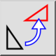
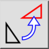
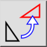
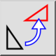

Rodar
Barra de ferramentas / Ícone:
 

Menu: Modificar > Rodar
Atalho: R, O
Comandos: rotate | ro
Esta é uma tradução automática.
Barra de ferramentas / Ícone:
 

Menu: Modificar > Rodar
Atalho: R, O
Comandos: rotate | ro
Roda entidades por um determinado ângulo em torno de um determinado centro.